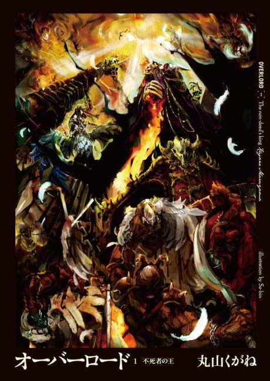
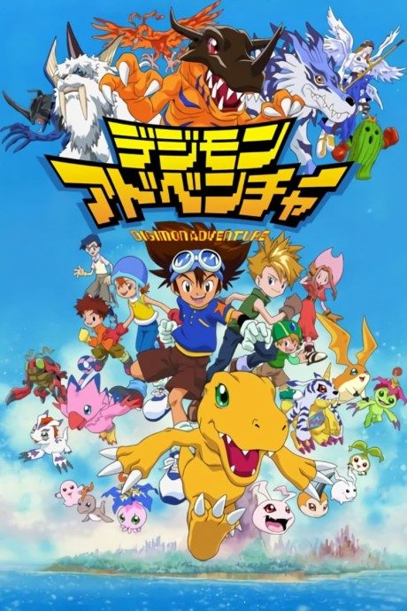

Light novel continues fromVol. 15
Anime
Light novel continues fromVol. 15
Anime
Light novelOverlord
オーバーロード
AniList7.7
Animeter—
4 seasons52 ep
SourceVol. 15
4 seasons, 52 episodes
In airing order. Episode numbers on this site count straight through every season, so season 2 starts at episode 14.
1
2015 · TV
Overlord
Episodes1–1313 ep
2
2018 · TV
Overlord II
Episodes14–2613 ep
3
2018 · TV
Overlord III
Episodes27–3913 ep
4
2022 · TV
Overlord IV
Episodes40–5213 ep
Films, OVAs and specials
Not counted in the episode numbers above.
·
2024 · Film
OVERLORD: The Sacred Kingdom
Sources: AniList
More like Overlord
 Unclear7.6
Unclear7.6
 Manga Ch. 3408.9
Manga Ch. 3408.9
 Manga Vol. 58.1
Manga Vol. 58.1
 Manga Vol. 116.5
Manga Vol. 116.5
 Manga Vol. 37.4
Manga Vol. 37.4

Original7.6